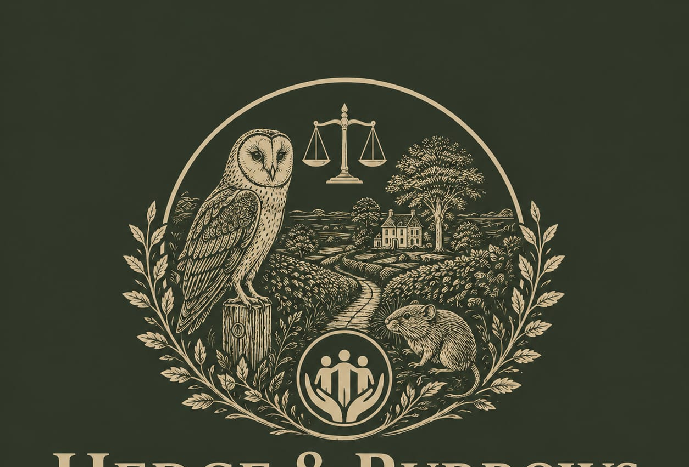

Eight years of hands-on pest control experience, working across Warwickshire, Staffordshire, and beyond. Twenty-three years working with land and people, before Hedge & Burrows.

Hedge & Burrows provides garden maintenance and pest control across Warwickshire, the West Midlands, and beyond, working with residential and commercial properties, including farms and offices. The business is fully licensed and insured, and every job is agreed directly with the client before work begins.
As Hedge & Burrows grows, so will the team behind it. Louise remains involved throughout, but the standards, methods, and care behind every job come from the business, not one person alone.
Louise has developed eight years of hands-on experience in pest control, carrying out duties safely and effectively. Hedge & Burrows is fully licensed and insured.
Before starting Hedge & Burrows, Louise spent 23 years in land stewardship, from community allotments to rewilding quarries. That work included running an environmental initiative through a community interest company, rewilding a former quarry site, and gardening projects supporting people furthest from employment.
Her earlier background is in legal services and mediation, which she draws on when working through a plan with clients.
Every job starts with a conversation, in person, by telephone, or by video call, to understand what your garden or land needs. From there, we recommend the most appropriate approach, whether that's ongoing garden care or an integrated pest management plan tailored to the situation.
“A well-kept garden means more than neat edges. It's knowing your land and treating it accordingly.”
Tell her about your garden or land, and she'll recommend the right approach.